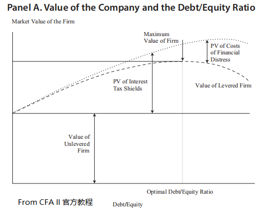

--------------------
资本结构决策
--------------------
- 不考虑税收的MM理论
- 无税命题1 : 资本结构无关
- 基本假设
- 投资者对相同的项目回报预期一致
- 证券市场时有效市场, 没有交易成本
- 借贷利率是无风险利率
- 没有代理成本, 管理层按股东利益执行
- 投资决策和融资决策独立, operting income 不受资本结构变化影响
- 结论 : MV与资本结构无关, VL=VU
- 解释 : 只要两个公司有相同的CF和折现率, 就有相同的MV
- rWACC=r0
- 无税命题2 : 杠杆影响cost of equity
- re=r0+(r0-rd)×(D/E)
- βe=βa+(βa-βd)×(D/E)
- 考虑税收的MM理论
- VL=VU+t×D
- 命题1: 最优资本结构是全债, t×D最大, 即税盾作用最大
- 命题2: 全债公司的WACC最小
- 公司财务困境成本 costs of financial distress
- 公司困境发生的成本
- 公司困境发生的概率
- 原因1: 杠杆
- 原因2: 管理层能力和法人治理 legal and administrative
- 代理成本 agency costs
- 由于managed by non-owners
- 管理层股份越少, 法人治理越差, 杠杆越低, 代理成本就越高
- monitoring costs, owner 监管 管理者
- bonding costs, 管理者向owner保证以owner的利益为目标
- residual loss, 其他成本
- costs of asymmetric information
- 管理层 vs. outsiders (owners, creditors)
- pecking order theory 啄食顺序理论
- 认为公司资本结构是公司决策的副产品
- 内部融资 > 债务融资 > 股权融资
- 静态权衡理论 static trade-off theory

- 公司通过增加负债来增强税盾, 增强V
- 公司因为增加了负债使财务困境风险的概率和成本都变大
- 有一处均衡点
--------------------
资本结构政策的实践问题
--------------------
- debt ratings
- 评估资本结构政策
- 常考虑的三个因素
- 公司资本结构是否保持变化, 变化 --> 不是最优结构
- 比较相似经营风险的竞争者的资本结构, 不应该有较大差别
- 公司特有因素
- 常用情景分析 scenario approach
- 当D/E变化会怎样?
- 最优D/E在哪?
- 什么情况会打破最优D/E?
- leverage in an international setting
--------------------
Next Chaptor